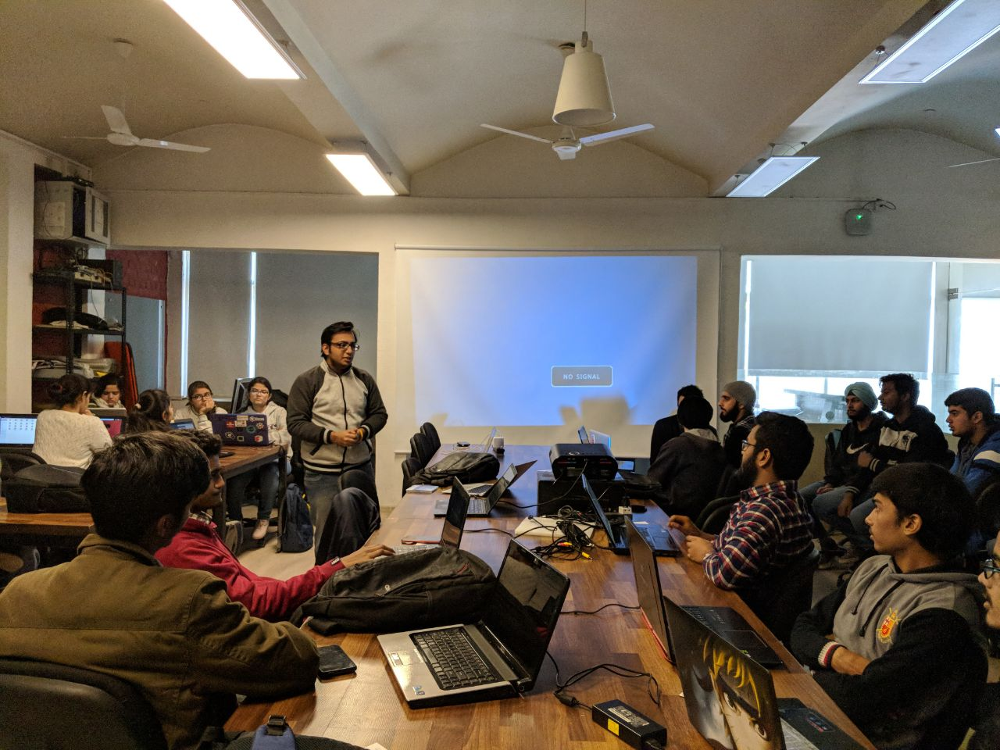
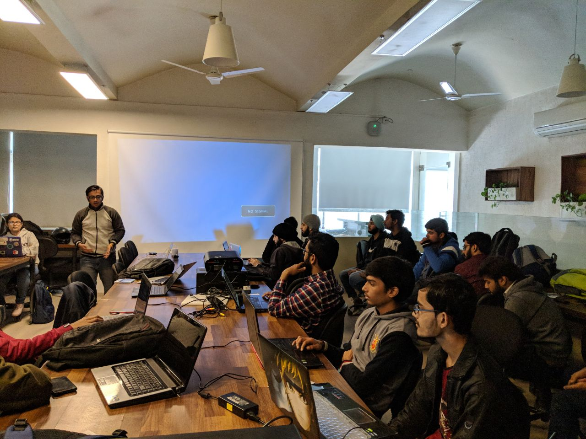
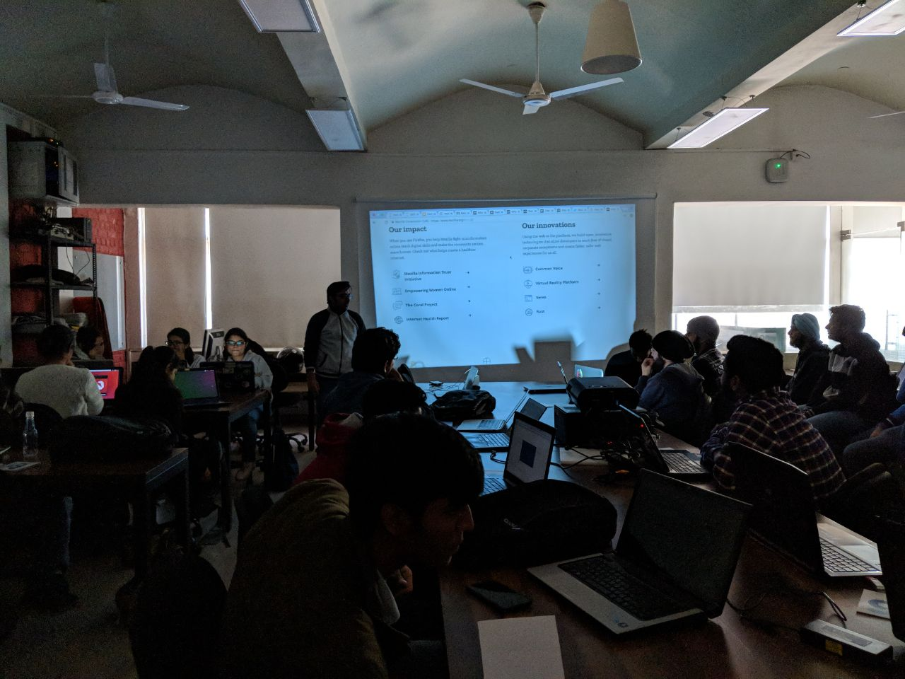
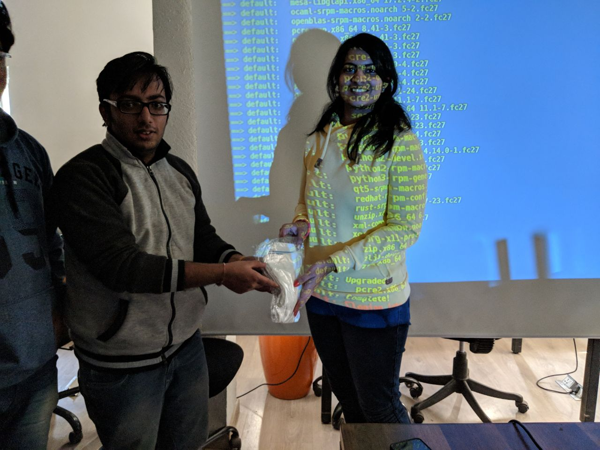

We recently organized Moz-Fedora Day, a one day event on promoting FOSS through Mozilla & Fedora at Investopad, Hauz Khas, Delhi on Jan 13, 2018. The aim was to depict the usage of packaging & building one of the Mozilla's project using Fedora.
The core event focused on making the participants automate the build of any of the Mozilla's open source project of their choice. The aim is to influence people to switch to Linux as a build environment (We used Fedora for this) and introduce the basics of the version control system (Mercurial in case of Mozilla). The event will also introduce to Vagrant for running standardized virtual machines for build environments.
The session began with Saurabh representing a bit about Fedora and other Linux Distributions. I discussed about Mozilla, it's mission and different projects. We then decided to package Servo in Fedora and guided folks through the steps to build the system. We used simple Vagrant setup to package Servo project with Fedora.
At the end of the event, we had a small discussion on how one can find bugs through Bugzilla & Bugsahoy. The presentation can be found here: http://www.sanyamkhurana.com/presentations/foss/
We also distributed some swags to folks who were able to make builds successfully.
Most of this was a hands-on session and I saw new faces who were truly excited to learn about these things. A Saturday well spent, spreading the love of Open Source.
Comments !